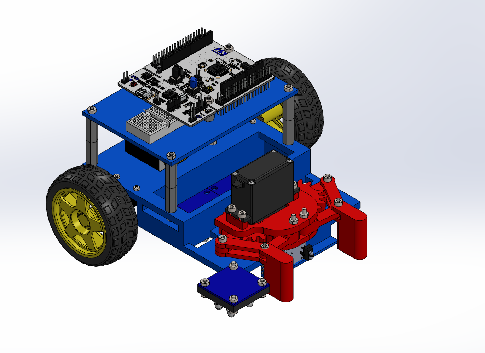

MTE 380: Autonomous Line Following Robot
In our MTE 380 project, we designed and built a two-wheeled autonomous robot capable of navigating a line-following course, detecting and retrieving a Lego figure, and delivering it to a safe zone. The robot was built around an STM32 Nucleo-64 microcontroller and optimized for real-time control, task accuracy, and robustness to surface noise. My focus was on embedded firmware development and PID control implementation.
Project Overview
- Designed to fit within 8x8x8 inches and operate fully autonomously with no cameras allowed.
- Used STM32F401 Nucleo-64 for real-time motor and sensor control with PWM and ADC integration.
- Implemented a PID controller for dynamic steering and course correction based on RGB sensor feedback.
- State machine logic allowed seamless transitions between line-following, object detection, pickup, and return routines.
Breakdown by Discipline
⚙️ Mechanical
3D printed chassis and servo-driven mechanical arm. Emphasized low center of gravity and compact, modular stacking for stability and weight reduction.
üîå Electrical
Integrated three RGB sensors for line and zone detection, an IR sensor for figure pickup, LiPo power supply, motor drivers, and robust I/O pin mapping on the STM32 board.
üíª Embedded Systems (My Focus)
- Programmed the STM32 microcontroller using C to control PWM motor outputs and ADC sensor inputs.
- Developed a real-time polling loop and optimized sensor reading speed for consistent feedback.
- Implemented UART debugging tools to verify sensor stability, PWM timing, and task sequencing.
- Designed a reliable state machine architecture to manage task execution autonomously.
ü߆ Controls (My Focus)
- Designed and tuned PID controllers to minimize oscillations and track the line reliably even over uneven surfaces.
- Switched from bang-bang to PID strategy after field testing showed improved reliability and reduced overshoot.
- Focused on minimizing sensor-processing loop times to ~25ms for better real-time control response.